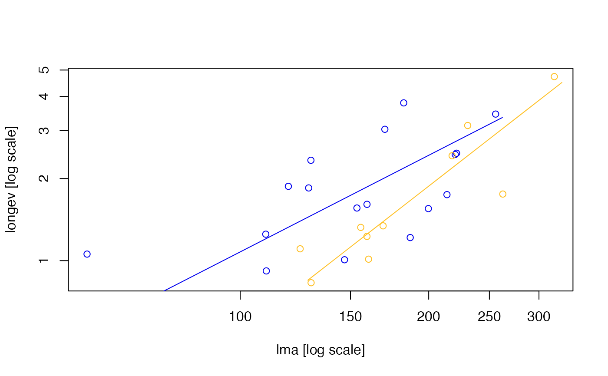

The sma and ma functions fit SMA and MA respectively, and
construct confidence intervals or test hypotheses about slope or elevation
in one or several samples, depending on how the arguments are specified.
Options exist to force lines through the origin, (approximately) correct for
measurement error if the measurement error variance is known, and use robust
estimation to ensure that inferences are valid in the presence of outliers
(currently implemented for single samples only).
Formula of the form y ~ x etc. This determines whether a single (S)MA is fitted, or whether several lines are fitted and compared. See Details.
A dataframe with the x and y variables.
A subset of the dataframe for fitting; optional.
What to do with missing values (na.omit, na.fail, etc).
One of 'x', 'y', or 'xy' to log10-transform variables.
If SMA, standardized major axis, if MA, major axis, and if OLS, ordinary least squares.
If several lines with common slope are to be compared, do you want to test for a change in 'elevation' or for a 'shift' along a common (S)MA. See Details.
The error rate for confidence intervals. Typically 0.05.
The hypothesised value to be used, if testing for evidence that (S)MA slope(s) are significantly different from a hypothesised value.
The hypothesised value to be used, if testing for evidence that (S)MA elevation(s) are significantly different from a hypothesised value.
Logical. If TRUE, performs pair-wise comparisons between levels of the grouping variable.
Whether to adjust the P values for multiple comparisons ('adjusted') or not ('default').
If TRUE, uses a new method of robust line fitting. (Currently available for single-sample testing only.)
The estimated variance matrix of measurement error. Average measurement error for Y is in the first row and column, and average measurement error for X is in the second row and column. The default is that there is no measurement error.
The minimum sample size for a group.
If TRUE, suppresses all messages.
Further arguments passed to internal functions (none at the moment?)
An object of class sma or ma, which contains the
following output arguments:
The coefficients of the fitted (standardised) major axes. If several samples are being compared, this will return parameters from the alternative model, e.g. assuming separate slopes if testing for common slope, or assuming common slope but separate elevations if testing for common elevation.
The coefficients under the null hypothesis
As above.
The method used in fitting lines: 'MA' or 'SMA'
Whether or not (S)MA lines were forced through the origin (True or False).
The call to the ma or sma
function.
As above.
As above.
A list of the variables used in fitting (S)MA lines.
A list of the variables prior to transformation (if any) for use in fitting (S)MA lines.
Levels of the grouping variable, if present in the fit.
Type of grouptest ("slopecom","elevcom",or "shiftcom"), if it was carried out, or "none" if none.
The result of that grouptest.
Output
from the hypothesis test of slope(s), if any. Returned as a list of objects,
including the P-value (p), the test statistic (r or
LR), the (common) slope (b) and its confidence interval
(ci).
Output from the hypothesis test of
elevation(s), if any. Returned as a list of objects, including the P-value
(p), the test statistic (t or stat), the (common)
elevation (a) and its confidence interval (ci).
Whether a slopetest was actually carried out.
Whether an elevation test was actually carried out.
Sample size(s).
Squared correlation coefficient.
P-value of the test of correlation coefficient against zero.
X values corresponding the maximum and minimum fitted values in each group. Used by plot.sma to determine endpoints for fitted lines).
Neatly organized dataframe with coefficients by group.
This is the key function in the smatr-package; all the key
estimation and testing functionality in the package can all be accessed
using this function, via different usages of the formula and other
arguments, as described below.
One-sample testing The below options allow estimation of a (S)MA,
confidence intervals for parameters, and hypothesis testing of parameters,
from a single sample of two variables y and x. Use the
sma function to fit a standardised major axis (SMA), or use ma
in combination with the below options in order to fit major axis (MA)
instead.
Fits a SMA and constructs
confidence intervals for the true slope and elevation. Replaces the
line.cis function from previous versions of smatr.
Fits a MA and constructs confidence intervals for
the true slope and elevation. All the below functions also work for MA, if
the ma function is called instead of the sma function.
Tests if the slope of a SMA equals
B.
Tests if the elevation of
a SMA equals A.
Fits a SMA using
Huber's M estimation and constructs confidence intervals for the true slope
and elevation. This offers robustness to outliers in estimation and
inference, and can be used in combination with the slope.test and
elev.test arguments.
Fits a SMA where
the line is forced through the origin, and constructs confidence intervals
for the true slope. This type of formula can be used in combination with the
slope.test argument.
For several samples: The below options allow estimation of several
(S)MA lines, confidence intervals for parameters, and hypothesis testing of
parameters, from two variables y and x for observations that
have been classified into several different samples using the factor
groups. Use the sma function to fit a standardised major axis
(SMA), or use the ma in combination with the below options in order
to fir major axis (MA) instead.
Test if several SMA lines share a common slope, and construct a confidence interval for the true common slope.
Test if several common slope SMA lines also share a common elevation, and construct a confidence interval for the true common elevation.
Test if several groups of observations have no shift in location along common slope SMA lines.
Test if several SMA
lines share a common slope whose true value is exactly equal to B.
Test if several common-slope
SMA lines share a common elevation whose true value is exactly equal to
A.
Test if several SMA lines
forced through the origin share a common slope. This can also be used in
combination with the slope.test argument or when testing for no shift
along common (S)MA lines.
In all cases, estimates and confidence intervals for key parameters are
returned, and if a hypothesis test is done, results will be returned and
stored in the slope.test or elev.test output arguments.
The plot function can be applied to objects produced using the
sma and ma functions, which is highly recommended to visualise
results and check assumptions.
Multiple comparisons If multcomp=TRUE, pair-wise comparisons are made
between levels of the grouping variable for differences in slope, elevation
or shift, depending on the formula used. The P values can be adjusted for
multiple comparisons (using the Sidak correction). See also
multcompmatrix for visualization of the results.
Warning: When using the multiple comparisons (multcomp=TRUE), you
must specify a data statement. If your variables are not in a
dataframe, simply combine them in a dataframe before calling sma.
Warton, D.I., R.A. Duursma, D.S. Falster and S. Taskinen (2012). smatr 3 - an R package for estimation and inference about allometric lines. Methods in Ecology and Evolution. 3, 257-259.
Warton D. I. and Weber N. C. (2002) Common slope tests for bivariate structural relationships. Biometrical Journal 44, 161--174.
Warton D. I., Wright I. J., Falster D. S. and Westoby M. (2006) A review of bivariate line-fitting methods for allometry. Biological Reviews 81, 259--291.
Taskinen S. and Warton D. I. (in press) Robust estimation and inference for bivariate line-fitting in allometry. Biometrical Journal.
# Load leaf lifetime dataset:
data(leaflife)
### One sample analyses ###
# Extract only low-nutrient, low-rainfall data:
leaf.low <- subset(leaflife, soilp == 'low' & rain == 'low')
# Fit a MA for log(leaf longevity) vs log(leaf mass per area):
ma(longev ~ lma, log='xy', data=leaflife)
#> Call: sma(formula = ..1, data = ..3, log = "xy", method = "MA")
#>
#> Fit using Major Axis
#>
#> These variables were log-transformed before fitting: xy
#>
#> Confidence intervals (CI) are at 95%
#>
#> ------------------------------------------------------------
#> Coefficients:
#> elevation slope
#> estimate -3.085214 1.492616
#> lower limit -3.968020 1.146777
#> upper limit -2.202407 2.001084
#>
#> H0 : variables uncorrelated
#> R-squared : 0.4544809
#> P-value : 4.0171e-10
#>
# Test if the MA slope is not significantly different from 1:
ma.test <- ma(longev ~ lma, log='xy', slope.test=1, data=leaflife)
summary(ma.test)
#> group n r2 pval Slope Slope_lowCI Slope_highCI
#> group all 67 0.4544809 4.01707e-10 1.492616 1.146777 2.001084
#> Int Int_lowCI Int_highCI Slope_test Slope_test_p Elev_test
#> group -3.085214 -3.96802 -2.202407 1 0.003539277 NA
#> Elev_test_p
#> group NA
# Construct a residual plot to check assumptions:
plot(ma.test,type="residual")
### Several sample analyses ###
# Now consider low-nutrient sites (high and low rainfall):
leaf.low.soilp <- subset(leaflife, soilp == 'low')
# Fit SMA's separately at each of high and low rainfall sites,
# and test for common slope:
com.test <- sma(longev~lma*rain, log="xy", data=leaf.low.soilp)
com.test
#> Call: sma(formula = longev ~ lma * rain, data = leaf.low.soilp, log = "xy")
#>
#> Fit using Standardized Major Axis
#>
#> These variables were log-transformed before fitting: xy
#>
#> Confidence intervals (CI) are at 95%
#>
#> ------------------------------------------------------------
#> Results of comparing lines among groups.
#>
#> H0 : slopes are equal.
#> Likelihood ratio statistic : 2.367 with 1 degrees of freedom
#> P-value : 0.12395
#> ------------------------------------------------------------
#>
#> Use the summary() function to print coefficients by group.
# Plot longevity vs LMA separately for each group:
plot(com.test)

# Fit SMA's separately at each of high and low rainfall sites,
# and test if there is a common slope equal to 1:
sma(longev~lma*rain, log="xy", slope.test=1, data=leaf.low.soilp)
#> Call: sma(formula = longev ~ lma * rain, data = leaf.low.soilp, log = "xy",
#> slope.test = 1)
#>
#> Fit using Standardized Major Axis
#>
#> These variables were log-transformed before fitting: xy
#>
#> Confidence intervals (CI) are at 95%
#>
#> ------------------------------------------------------------
#> Results of comparing lines among groups.
#>
#> H0 : slopes are equal.
#> Likelihood ratio statistic : 2.367 with 1 degrees of freedom
#> P-value : 0.12395
#> ------------------------------------------------------------
#>
#> H0 : common slope not different from 1
#> Likelihood ratio statistic = 8.677 with 2 degrees of freedom under H0
#> P-value : 0.013057
#>
#> Use the summary() function to print coefficients by group.
# Fit SMA's with common slope across each of high and low rainfall sites,
# and test for common elevation:
sma(longev~lma+rain, log="xy", data=leaf.low.soilp)
#> Call: sma(formula = longev ~ lma + rain, data = leaf.low.soilp, log = "xy")
#>
#> Fit using Standardized Major Axis
#>
#> These variables were log-transformed before fitting: xy
#>
#> Confidence intervals (CI) are at 95%
#>
#> ------------------------------------------------------------
#> Results of comparing lines among groups.
#>
#> H0 : slopes are equal.
#> Likelihood ratio statistic : 2.367 with 1 degrees of freedom
#> P-value : 0.12395
#> ------------------------------------------------------------
#>
#> H0 : no difference in elevation.
#> Wald statistic: 6.566 with 1 degrees of freedom
#> P-value : 0.010393
#> ------------------------------------------------------------
#>
#> Use the summary() function to print coefficients by group.
# Fit SMA's with common slope across each of high and low rainfall sites,
# and test for no shift along common SMA:
sma(longev~lma+rain, log="xy", type="shift", data=leaf.low.soilp)
#> Call: sma(formula = longev ~ lma + rain, data = leaf.low.soilp, log = "xy",
#> type = "shift")
#>
#> Fit using Standardized Major Axis
#>
#> These variables were log-transformed before fitting: xy
#>
#> Confidence intervals (CI) are at 95%
#>
#> ------------------------------------------------------------
#> Results of comparing lines among groups.
#>
#> H0 : slopes are equal.
#> Likelihood ratio statistic : 2.367 with 1 degrees of freedom
#> P-value : 0.12395
#> ------------------------------------------------------------
#>
#> H0 : no shift along common axis.
#> Wald statistic: 0.2091 with 1 degrees of freedom
#> P-value : 0.64745
#> ------------------------------------------------------------
#>
#> Use the summary() function to print coefficients by group.